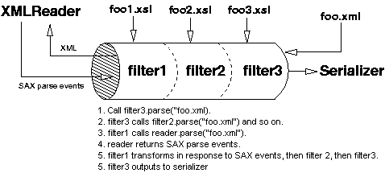

|
Xalan-Java Interpretive samples:
Xalan-Java Interpretive servlet samples:
Xalan-Java Compiled samples:
 | | | | Samples to help you get started | | | | |
| | |
Each of the subdirectories in the Xalan-Java java/samples directory
contains the source files for one or more sample applications. The class
files for the samples are in the following jar files:
| JAR file
|
Content
|
| xalansamples.jar
|
Everything except the Xalan-Java Interpretive servlet sample and some
XSLTC samples
|
| xalanservlet.jar
|
Xalan-Java Interpretive servlet sample
|
| xsltcapplet.jar
|
XSLTC applet sample
|
| xsltcbrazil.jar
|
XSLTC Brazil server sample
|
| xsltcejb.jar
|
XSLTC EJB sample
|
| xsltcservlet.jar
|
XSLTC servlet sample
|
With most of the samples, you can use the following procedure:
- Be sure
xalan.jar, serializer.jar, xml-apis.jar, the appropriate samples JAR file,
and xercesImpl.jar are on the system class path. For the extension examples, bsf.jar
and (for the JavaScript extensions) js.jar must also be on the class path.
- Be sure the java executable is on your path.
- Go to the samples subdirectory containing the sample (use the DOS shell if you are running Windows).
- Run the sample from the command line (as indicated below).
- Examine the application source files. You may also want to modify the source files. Remember that if you
modify a java file, you must recompile the class and place it on the classpath before you can run the
modified application.
The basic command line for running most of the samples is
java classname args
where classname is the sample class and args are the arguments, if any. As described in
the following sections, some samples take no arguments. The UseStylesheetParam sample takes an
additional argument. Several samples in extensions use the Xalan-Java
command-line utility, so they take arguments for the XML source
file and the XSL stylesheet.
|
| | |
What it does: The SimpleTransform class uses the birds.xsl stylesheet to transform birds.xml, and prints the
output to birds.out.
You can run it from the SimpleTransform subdirectory with
java SimpleTransform
|
| | |
What it does: The UseStylesheetPI class uses the stylesheet processing instruction in the XML source document to determine
which stylesheet to use to perform the transformation.
You can run it from the UseStylesheetPI subdirectory with
java UseStylesheetPI
For more information, see Working with embedded stylesheets.
|
| | |
What it does: The UseStyleSheetParam class uses foo.xsl and a stylesheet parameter to transform foo.xml,
and prints the output to System.out. The stylesheet parameter appears as a text node in the output.
Run this sample from the UseStylesheetParam subdirectory with
java UseStylesheetParam param
where param is the stylesheet parameter value (a string of your choice).
|
| | |
What it does: Explicitly sets the SAX XMLReader and SAX ContentHandler for processing the stylesheet (birds.xsl), processing the XML input (birds.xml), and producing the output (birds.out).
Run this sample from the SAX2SAX subdirectory with
java SAX2SAX
|
| | |
What it does: the DOM2DOM class uses the birds.xsl stylesheet to transform a DOM Document generated from birds.xml,
produces an output DOM, and traverses the DOM, printing the traversal to System.out. In contrast to SimpleTransform,
DOM2DOM illustrates the procedure for processing an input DOM and creating an output DOM that is available for
further processing.
You can run it from the DOM2DOM subdirectory with
java DOM2DOM
|
| | |
What it does: Pipes the output from one transformation to a second transformation, then from the second
transformation to the third transformation. Transformer1 is the ContentHandler for the XMLReader (which parses the
input document). Transformer2 provides the ContentHandler for Transformer1, and Transformer3 for Transformer2.
 | Pipe and UseXMLFilters illustrate two strategies for using the output of one transformation as the input for
another transformation. The Pipe sample incorporates a "push" model -- Transformer1 "pushes" its output to
Transformer2, and so on -- whereas in the UseXMLFilters sample, Transformer3 "pulls" its input from Transformer2,
and so on. |
Run this sample from the Pipe subdirectory with
java Pipe
|
| | |
What it does: Chains together the same transformations as the preceding Pipe sample. Using each Transformer
object as an extension of the SAX XMLFilter interface, sets the XMLReader as the parent of filter1,
filter1 as the parent of filter2, and filter2 as the parent of of filter3.

Run this sample from the UseXMLFilters subdirectory with
java UseXMLFilters
|
| | |
This applet uses a stylesheet to transform an XML document into HTML. It displays the XML document, the
stylesheet, and the HTML output.
How to run it: Open appletXMLtoHTML.html in the Internet Explorer 5 browser.
| For information about running Xalan-Java applets in Netscape Communicator, see Problems
with Netscape.
This applet looks for xalan.jar and serializer.jar in the build directory, or the top level directory, and xml-apis.jar and
xercesImpl.jar in the lib subdirectory. If you have placed these JAR files elsewhere, adjust the applet archive setting in
client.html accordingly. |
|
| | |
For a general introduction, see Using Xalan-Java in a servlet.
The servlet subdirectory contains four sample servlets and one JSP that use Xalan-Java to perform transformations. The sample
code is compiled and packed in xalanservlet.war. To run these samples, you must place
xalanservlet.war on a web server with a servlet engine. For example, using jakarta-tomcat 4.1.*.
Copy the xalanservlet.war to %Tomcat_Home%/webapps. For more details about deploying
servlets on Tomcat, please refer to Deployment Organization.
| Dependency on Tomcat version. If encountering "java.lang.VerifyError: Cannot inherit from final class" error,
replace xercesImpl.jar under %Tomcat_Home%/common/endorsed with the one included with Xalan-Java . |
servlet.SimpleXSLTServlet applies a particular stylesheet to a particular
XML document.
servlet.UseStylesheetParamServlet sets a stylesheet parameter
(the parameter name is hardwired into the servlet), and requires the user to supply parameters for the
XML document and XSL stylesheet.
jspSample.jsp is a Java ServerPage that sets a stylesheet parameter and applies the
stylesheet to the XML document.
servlet.XSLTServletWithParams accepts parameters for the XML document,
the XSL stylesheet, and any number of stylesheet parameters.
servlet.ApplyXSLT (and associated classes) is closer to a production level servlet. It accepts parameters, provides a
listener for capturing and reporting debugger messages, and supports use of a property file to determine which
stylesheet to apply based on the identity of the client browser/device.
| | |
| Paul Campbell <seapwc@halcyon.com> wrote this Java Server Page. |
This Java Server Page performs essentially the same operation as
servlet.UseStylesheetParamServlet. It applies a stylesheet parameter
to a stylesheet (fooparam.xsl), applies the stylesheet to an XML source document (fooparam.xml), and returns the
result.
Call JSP as follows:
- http://localhost:port/xalanservlet/jspSample.jsp?
XML=fooparam.xml&XSL=fooparam.xsl&PMA=GoodBye
The JSP obtains the PMA value "GoodBye" from the http request and passes it to the stylesheet as the
paramValue argument in a Transformer setParameter() call.
|
| | |
What it does: The client (which you must set up) specifies an XML document and a stylesheet. The servlet
performs the transformation and returns the output to the client. You can use media.properties to specify
which stylesheet is to be used depending on the client browser/device.
| The source files for this servlet, including ApplyXSLT.java, ApplyXSLTProperties.java, DefaultApplyXSLTProperties.java,
ApplyXSLTListener.java, ApplyXSLTException.java. booklist1.xsl, booklist2.xsl and catalog.xml,
are provided for testing. |
To run the servlet: set system property server.root=server root. Set up an HTML page to call
servlet.ApplyXSLT with arguments as illustrated below.
The files catalog.xml, booklist1.xsl and booklist2.xsl are used in the following example.
In the deployment descriptor, booklist1.xsl is set as the default xsl file. If you create these
files yourself, make sure that you set the output method to "xml" in the stylesheet.
Examples:
- http://localhost:port/xalanservlet/ApplyXSLT?URL=/xalanservlet/catalog.xml&xslURL=
/xalanservlet/booklist2.xsl
- ...applies the booklist2.xsl stylesheet to the catalog.xml data. Both files are
served from the Web server's HTTP document root.
- http://localhost:port/xalanservlet/ApplyXSLT?URL=/xalanservlet/catalog.xml&xslURL=
/xalanservlet/booklist2.xsl&debug=true
- ...ensures that XML and XSL processor messages are returned in the event of problems
applying booklist2.xsl to catalog.xml
- http://localhost:port/xalanservlet/ApplyXSLT/xalanservlet/catalog.xml?xslURL=/xalanservlet/booklist2.xsl
- ...applies the booklist2.xsl stylesheet to the catalog.xml data, just like the first example.
This is an alternative way of specifying the XML XSLTInputSource by utilizing the HTTP request's path
information.
- http://localhost:port/xalanservlet/ApplyXSLT/xalanservlet/catalog.xml
- ...examines catalog.xml for an associated XSL stylesheet booklist1.xsl (a stylesheet Processing Instruction). If multiple XSLs are associated with the data, the stylesheet whose media attribute maps to your browser type will be chosen. If no mapping is successful, the primary associated stylesheet is used.
|
|
| | |
For an introduction to the creation and use of extension elements and extension functions, and
for information about the extensions library distributed with the Xalan-Java Interpretive processor,
see Extensions. Extensions are also supported for the Xalan-Java
Compiling processor (XSLTC), however no samples exist at this time. See
Extensions for XSLTC.
The extensions subdirectory contains six samples with Xalan-Java Interpretive extensions. Two of the samples use
extensions implemented in JavaScript, and four of the samples use extensions implemented in Java.
To run these examples, you must place bsf.jar and js.jar (version 1.5, available from
http://www.mozilla.org/rhino) on the classpath.
You do not need js.jar on the classpath for the samples that use Java extensions.
Problems related to JDK 1.4 or higher.
Use java.org.apache.xalan.xslt.Process, the Xalan-Java command-line utility, to run most of these samples from
the command line. The command line must include an -in flag with the
XML source and an -xsl flag with the XSL stylesheet. If you want the output to be written to a file, rather
than to the screen, add an -out flag with the output file name.
Run these samples from the extensions directory as follows (each of the following is a single command
line):
| | |
What it does: Uses the Redirect extension elements shipped with Xalan-Java to direct output to two output
files.
Run this sample from the extensions subdirectory with
java org.apache.xalan.xslt.Process -in 1-redir.xml
-xsl 1-redir.xsl
The standard (non-redirected) output is written to the screen. The redirected output is written to 1-redir-out, or
whatever filename you assign to the doc/foo @file attribute in 1-redir.xml. The stylesheet gets the file name for
redirected output from the XML input file.
|
| | |
What it does: Uses an extension element and extension function implemented in JavaScript to compute a
deadline for responding to a customer inquiry.
| js.jar must be on the classpath. |
Run this sample from the extensions subdirectory with
java org.apache.xalan.xslt.Process -in 2-basicJscript.xml
-xsl 2-basicJscript.xsl
|
| | |
What it does: Uses extension functions to format dates. This sample illustrates use of the predefined java
extension namespace to provide ready access to extensions implemented in Java.
Run this sample from the extensions subdirectory with
java org.apache.xalan.xslt.Process -in 3-java-namespace.xml
-xsl 3-java-namespace.xsl
|
| | |
What it does: Uses a Java extension to transform a set of name elements into a numbered and alphabetized
list.
Run this sample from the extensions subdirectory with
java org.apache.xalan.xslt.Process -in numlist.xml
-xsl 4-numlistJava.xsl
|
| | |
What it does: Uses a JavaScript extension to transform a set of name elements into a numbered and
alphabetized list. This sample performs the same operations as the preceding Java extension.
| js.jar must be on the classpath. |
Run this sample from the extensions subdirectory with
java org.apache.xalan.xslt.Process -in numlist.xml
-xsl 5-numlistJscript.xsl
|
|
| | |
The SQL library
extension enables you to execute SQL queries from within a stylesheet,
and to incorporate query result sets in the XML output.
To use the SQL library, you need a JDBC driver, the underlying DBMS,
and a database.
Our samples use Apache Derby DBMS, but the SQL Extensions and sample code
can be configured to query data from any DBMS that can be accessed through
JDBC.
| | | | Setting up the SQL extension samples | | | | |
| | |
To run the SQL library extension samples, do the following:
The SQL Extension examples require the Apache Derby jars.
The Derby jars are available from
http://db.apache.org/derby/.
The sample batch/script files are configured to look for the
derby jars in the xml-xalan/java/samples/extensions/sql directory by default.
If you already have derby installed and want to use that implementation.
You can do one of the following.
- set the environment variable DERBY_JAR_DIR to point to the location of
derby.jar and derbytools.jar
- have the
derby.jar and derbytools.jar in your classpath.
First create the sample database using Derby. To do this,
- on Windows, execute the command
runDerby.bat createdb.sql
- on Unix, execute the command
sh runDerby.sh createdb.sql
You can use the Derby tools to examine the raw database. To do this,
- on Windows execute the command
runDerby.bat
At the lj> prompt type the following commands:
lj> connect 'sampleDB';
lj> select * from import1;
To quit the lj session type
lj> quit;
- To Start lj on Unix type
sh runDerby.sh
Once the sample database has been created, you can run the sample
stylesheets using the runXalan script.
|
| | |
Contributed by John Gentilin (johnglinux@eyecatching.com).
What it does: illustrates two strategies for connecting to a database, executing a
static query, and returning the query result.
The first strategy is to get connection information along with the static query from
the stylesheet (dbtest.xsl)\ in the form of stylesheet parameters.
The second strategy is to get connection information from a nodeset in an XML source
document (dbInfo.xml).
Set up the database, and run this sample from the
extensions/sql/ directory.
1. To get connection information from the stylesheet:
runXalan -xsl basic-connection/dbtest.xsl -out import1.html
2. To get connection information in the form of a nodeset from the XML source document:
runXalan -in dbinfo.xml -xsl dbtest-cinfo.xsl -out import1.html
|
| | |
Contributed by John Gentilin (johnglinux@eyecatching.com).
What it does: The ExternalConnection classes uses the default implementation of the
ConnectionPool interface to create a pool of connections. A stylesheet in turn uses a
connection from this pool to instantiate an XConnection object and connect to a datasource.
The stylesheet uses this named connection pool to instantiate an XConnection object and
connect to the datasource. The ExternalConnection class is in xalansamples.jar.
Set up the database, be sure xalanxamples.jar is on the
class path, and run this sample from the extensions/sql directory:
runExtConnection ext-connection/dbtest.xsl
ExternalConnection creates the ConnectionPool, and performs a transformation with dbtest.xsl,
which draws from the pool to instantiate an XConnection object, connect to the datasource,
execute a static query, and return the query result.
|
| | |
Contributed by John Gentilin (johnglinux@eyecatching.com).
What it does: connects to a datasource, executes a parameterized query, and returns
the result. The XML source document provides the parameter value as well as the connection
information. The parameter value is in a node in the XML source.
The stylesheet gets the required connection and parameter information from the XML source,
sets up and executes the parameterized query, and retuns the query result set.
Set up the database, and run this sample from the sql subdirectory:
runXalan -in pquery/dbinfo.xml -xsl pquery/dbtest.xsl -out import1.html
|
| | |
Contributed by John Gentilin (johnglinux@eyecatching.com).
What it does: Illustrates enabling and disabling of a streamable result set returned by a query.
With a streamable result set, you can create a query that will return many rows but the
result will only consume the amount of memory to represent a single row. As a benefit,
you can perform transformations on large amounts of data while maintaining a low memory profile.
On the down side, when you use streaming, you can NOT, visit previous nodes because the SQL
extension only supports unidirectional cursors. If you requires that the whole query be available
so that you can apply templates to previous rows, just disable caching.
Set up the database, and run these samples from the sql subdirectory.
1. An example where streaming is disabled:
runXalan -in streamable/dbinfo.xml -xsl streamable/cachedNodes.xsl -out import1.html
2. An example where streaming is enabled
runXalan -in streamable/dbinfo.xml -xsl streamable/streamNodes.xsl -out import1.html
3. This example performs a pivor function swaping rows and columns, streaming is
required to be disabled here.
runXalan -in streamable/dbinfo.xml -xsl streamable/pivot.xsl -out import1.html
|
| | |
Contributed by John Gentilin (johnglinux@eyecatching.com).
What it does: use the SQL library ExtensionError class to return an error message
in the output stream. The stylesheet calls a template with a select statement that
returns a nodeset when an error occurs.
Set up the database, and run this sample from the extensions/sql subdirectory:
1. An example where we specify invalid connection information:
runXalan -in show-error/dbinfo.xml -xsl show-error/invalidConn.xsl -out import1.html
2. An example where we specify invalid parameters to a parameterized query:
runXalan -in show-error/dbinfo.xml -xsl show-error/invalidPQuery.xsl -out import1.html
3. An example where we specify an invlaid query:
runXalan -in show-error/dbinfo.xml -xsl show-error/invalidQuery.xsl -out import1.html
|
|
| | |
What it does: Trace uses the TraceListener and TraceManager classes to log transformation events.
Run this sample from the Trace subdirectory with
java Trace
and examine the result in events.log. Additionally, run this sample from the extensions subdirectory with
java Trace 3-java-namespace
for the trace of a stylesheet with extensions. For more information, see Debugger Interface
|
| | |
| | |
What it does: Uses SAXParserFactory to turn on validation, and
XMLReader to parse the XML input and report errors and warnings to a SAX event
handler. The XML input (birds.xml) contains an internal DOCTYPE declaration, and a few minor document type violations, which you are
invited to fix, add to, and vary in any way you find useful.
Run this sample from the Validate subdirectory with
java ValidateXMLInput
|
| | |
What it does: Uses the JAXP SAXParser with a SAX event handler
(extends DefaultHandler and implements
LexicalHandler) to verify that XML files conform to their declared
document type. You can use this utility to verify that an individual file or all the .xml files in a directory are
well-formed and valid. Each .xml file should contain a DOCTYPE declaration.
Run this sample from any directory with
java Validate file-or-dir-name [logfile]
where file-or-dir-name is an XML file or directory pathname, and logfile designates a log.
If you omit the second argument, Validate reports its findings to the screen.
| A limitation: Files containing document parts appear to fail if you check them with Validate. Check readme.xml,
which "includes" by entity reference a number of files, and it passes. The parse operation scans the entire document
with the includes. Check an "included" file (such as history.xml) as if it were an independent document and it fails. |
|
|
| | |
What it does: spawns multiple threads, with each thread running two transformations on two different XML files.
Run this sample from the TransformThread subdirectory with
java TransformThread
and examine the source in TransformThread.java. A more detailed description along with configuration options are listed in the header.
|
| | |
What it does: ApplyXPath uses the convenience methods in the Xalan-Java 2 specific XPathAPI to
execute an XPath expression against an XML document and return the nodes (if any) it finds.
| You can use this sample as an aid when you want to find out what a given XPath expression returns from a
given XML file. Keep in mind that the context node (base point of evaluation) for the XPath expression is the document
root. |
Run this sample from the ApplyXPath subdirectory with
java ApplyXPath XMLFile XPathExpression
where XMLFile is an XML source file and XPathExpression is an XPath expression to
apply to that file. The ApplyXPath subdirectory contains an XML file named foo.xml --
<doc><name first="David" last="Marston"/>...</doc>
-- so you can try command
lines like
java ApplyXPath foo.xml /
and
java ApplyXPath foo.xml /doc/name/@first
For more information, see Working with XPath expressions.
|
| | |
What it does: ApplyXPathDOM is very similar to the ApplyXPath sample, but it uses the API
in the DOM Level 3 XPath
Specification to execute an XPath expression against an XML document and return
the nodes (if any) it finds.
| You can use this sample as an aid when you want to find out what a given XPath expression returns from a
given XML file. Keep in mind that the context node (base point of evaluation) for the XPath expression is the document
root. |
Run this sample from the ApplyXPathDOM subdirectory with
java ApplyXPathDOM XMLFile XPathExpression
where XMLFile is an XML source file and XPathExpression is an XPath expression to
apply to that file. The ApplyXPathDOM subdirectory contains an XML file named foo.xml --
<doc><name first="David" last="Marston"/>...</doc>
-- so you can try command
lines like
java ApplyXPathDOM foo.xml /
and
java ApplyXPathDOM foo.xml /doc/name/@first
For more information, see Working with XPath expressions.
|
| | |
What it does: ApplyXPathJAXP is similar to the ApplyXPath sample, but it uses the XPath API in JAXP 1.3
to evaluate an XPath expression against an XML document and return the evaluation result in the specified type.
Run this sample from the XPathAPI subdirectory with
java ApplyXPathJAXP XMLFile XPathExpression ReturnType
where XMLFile is an XML source file, XPathExpression is an XPath expression to
apply to that file, and ReturnType is one of the strings from the list {"num", "bool", "str", "node", "nodeset"}
designating the return type of the evaluation. The XPathAPI subdirectory contains an XML file named
foo.xml. So you can try command lines like
java ApplyXPathJAXP foo.xml /doc/name[1]/@last str
and
java ApplyXPathJAXP foo.xml /doc/name nodeset
|
| | |
What it does: XPathResolver provides sample implementations of the NamespaceContext, XPathFunctionResolver
and XPathVariableResolver interfaces described in the
JAXP 1.3 XPath API.
The sample demonstrates how these implementations can be used to to evaluate XPath expressions that contain
extension functions and references to variables.
Run this sample from the XPathAPI subdirectory with
java XPathResolver
|
| | |
You can use the JAXP interfaces to compile and run translets.
For an overview of the usage patterns these samples illustrate, see
Calling XSLTC with the JAXP API.
| | |
Other XSLTC samples are located in the following samples subdirectories:
- CompiledServlet
- CompiledBrazil
- CompiledJAXP
- CompiledApplet
- CompiledEJB
For information about each of these samples, consult the README file in the subdirectory.
XSLTC provides demos for using XSLTC as a servlet and as a handler for
Brazil (a new and powerful Web techology from Sun labs).
To run the Brazil-handler demo, download Brazil from sunlabs:
http://research.sun.com/research/download/index.html
The translet must be specified as a pure class name,
accessible through the Brazil-handler's classpath. For
example:
translet=mk054
The document must be specified as a valid URL. For example:
document=http://server/path/to/filename.xml
If the file is local to the Brazil handler, it has to be
specified using the "file:filename.xml" format.
| In order to run the Brazil-handler demo, you also need to
make the Brazil and javax classes available from your
classpath |
To run the servlet demo, download the java extensions for servlets from Sun:
http://java.sun.com/products/servlet/download.html
|
|
|